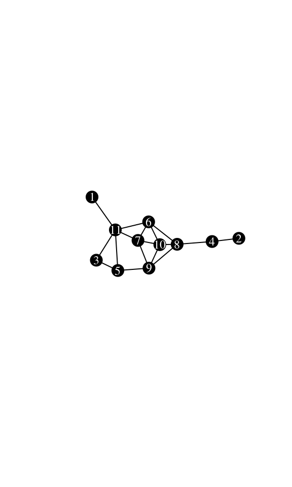
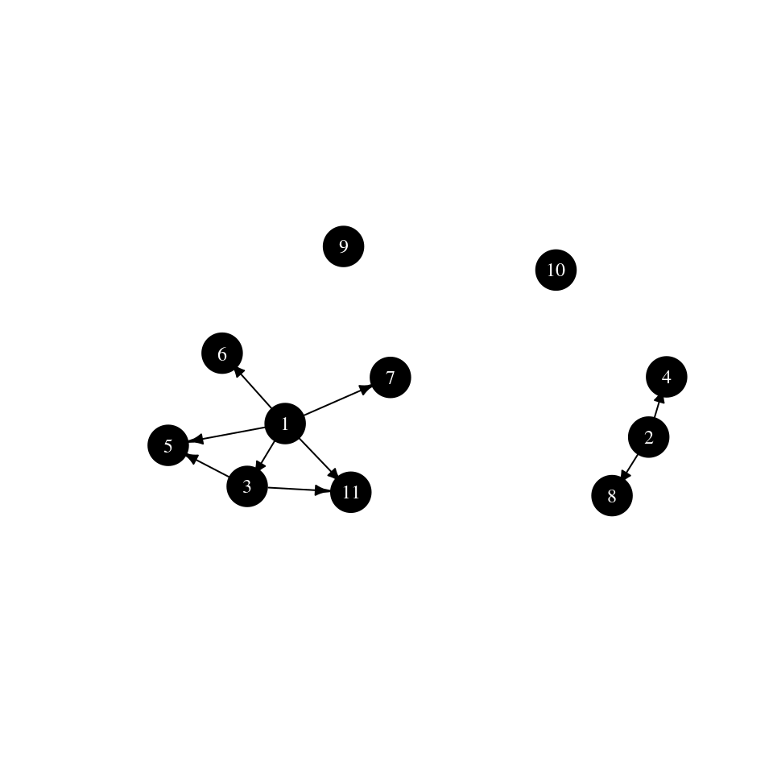

This vignette describes the concept of neighborhood-inclusion, its connection with network centrality and gives some example use cases with the netrankr package. The partial ranking induced by neighborhood-inclusion can be used to assess partial centrality or compute probabilistic centrality.
In an undirected graph \(G=(V,E)\), the neighborhood of a node \(u \in V\) is defined as \[N(u)=\lbrace w : \lbrace u,w \rbrace \in E \rbrace\] and its closed neighborhood as \(N[v]=N(v) \cup \lbrace v \rbrace\). If the neighborhood of a node \(u\) is a subset of the closed neighborhood of a node \(v\), \(N(u)\subseteq N[v]\), we speak of neighborhood inclusion. This concept defines a dominance relation among nodes in a network. We say that \(u\) is dominated by \(v\) if \(N(u)\subseteq N[v]\). Neighborhood-inclusion induces a partial ranking on the vertices of a network. That is, (usually) some (if not most!) pairs of vertices are incomparable, such that neither \(N(u)\subseteq N[v]\) nor \(N(v)\subseteq N[u]\) holds. There is, however, a special graph class where all pairs are comparable (found in this vignette).
The importance of neighborhood-inclusion is given by the following result:
\[ N(u)\subseteq N[v] \implies c(u)\leq c(v), \] where \(c\) is a centrality index defined on special path algebras. These include many of the well known measures like closeness (and variants), betweenness (and variants) as well as many walk-based indices (eigenvector and subgraph centrality, total communicability,…).
Very informally, if \(u\) is dominated by \(v\), then u is less central than \(v\) no matter which centrality index is used, that fulfill the requirement. While this is the key result, this short description leaves out many theoretical considerations. These and more can be found in
Schoch, David & Brandes, Ulrik. (2016). Re-conceptualizing centrality in social networks. European Journal of Appplied Mathematics, 27(6), 971–985. (link)
netrankr Packagelibrary(netrankr)
library(igraph)
set.seed(1886) #for reproducibilityWe work with the following simple graph.
g <- graph.empty(n=11,directed = FALSE)
g <- add_edges(g,c(1,11,2,4,3,5,3,11,4,8,5,9,5,11,6,7,6,8,
6,10,6,11,7,9,7,10,7,11,8,9,8,10,9,10))
V(g)$name <- 1:11
plot(g,
vertex.color="black",vertex.label.color="white", vertex.size=16,vertex.label.cex=0.75,
edge.color="black",
margin=0,asp=0.5)
We can compare neighborhoods manually with the neighborhood function of the igraph package. Note the mindist parameter to distinguish between open and closed neighborhood.
u <- 3
v <- 5
Nu <- neighborhood(g,order=1,nodes=u,mindist = 1)[[1]] #N(u)
Nv <- neighborhood(g,order=1,nodes=v,mindist = 0)[[1]] #N[v]
Nu## + 2/11 vertices, named, from a0884b3:
## [1] 5 11Nv## + 4/11 vertices, named, from a0884b3:
## [1] 5 3 9 11Although it is obvious that Nu is a subset of Nv, we can verify it with R.
all(Nu%in%Nv)## [1] TRUEChecking all pairs of nodes can efficiently be done with the neighborhood_inclusion() function from the netrankr package.
P <- neighborhood_inclusion(g)
P## [,1] [,2] [,3] [,4] [,5] [,6] [,7] [,8] [,9] [,10] [,11]
## [1,] 0 0 1 0 1 1 1 0 0 0 1
## [2,] 0 0 0 1 0 0 0 1 0 0 0
## [3,] 0 0 0 0 1 0 0 0 0 0 1
## [4,] 0 0 0 0 0 0 0 0 0 0 0
## [5,] 0 0 0 0 0 0 0 0 0 0 0
## [6,] 0 0 0 0 0 0 0 0 0 0 0
## [7,] 0 0 0 0 0 0 0 0 0 0 0
## [8,] 0 0 0 0 0 0 0 0 0 0 0
## [9,] 0 0 0 0 0 0 0 0 0 0 0
## [10,] 0 0 0 0 0 0 0 0 0 0 0
## [11,] 0 0 0 0 0 0 0 0 0 0 0If an entry P[u,v] is equal to one, we have \(N(u)\subseteq N[v]\).
The function dominance_graph() can alternatively be used to visualize the neighborhood inclusion as a directed graph.
g.dom <- dominance_graph(P)
plot(g.dom,
vertex.color="black",vertex.label.color="white", vertex.size=16, vertex.label.cex=0.75,
edge.color="black", edge.arrow.size=0.5,margin=0,asp=0.5)
We start by calculating some standard measures of centrality found in the ìgraph package for our example network. Note that the netrankr package also implements a great variety of indices, but they need further specifications described in this vignette.
cent.df <- data.frame(
vertex=1:11,
degree=degree(g),
betweenness=betweenness(g),
closeness=closeness(g),
eigenvector=eigen_centrality(g)$vector,
subgraph=subgraph_centrality(g)
)
#rounding for better readability
cent.df.rounded <- round(cent.df,4)
cent.df.rounded## vertex degree betweenness closeness eigenvector subgraph
## 1 1 1 0.0000 0.0370 0.2260 1.8251
## 2 2 1 0.0000 0.0294 0.0646 1.5954
## 3 3 2 0.0000 0.0400 0.3786 3.1486
## 4 4 2 9.0000 0.0400 0.2415 2.4231
## 5 5 3 3.8333 0.0500 0.5709 4.3871
## 6 6 4 9.8333 0.0588 0.9847 7.8073
## 7 7 4 2.6667 0.0526 1.0000 7.9394
## 8 8 4 16.3333 0.0556 0.8386 6.6728
## 9 9 4 7.3333 0.0556 0.9114 7.0327
## 10 10 4 1.3333 0.0526 0.9986 8.2421
## 11 11 5 14.6667 0.0556 0.8450 7.3896Notice how for each centrality index, different vertices are considered to be the most central node. The most central from degree to subgraph centrality are \(11\), \(8\), \(6\), \(7\) and \(10\). Note that only undominated vertices can achieve the highest score for any reasonable index. As soon as a vertex is dominated by at least one other, it will always be ranked below the dominator. We can check for undominated vertices simply by forming the row Sums in P.
which(rowSums(P)==0)## [1] 4 5 6 7 8 9 10 118 nodes are undominated in the graph. It is thus entirely possible to find indices that would also rank \(4, 5\) and \(9\) on top.
Besides the top ranked nodes, we can check if the entire partial ranking P is preserved in each centrality ranking. If there exists a pair \(u\) and \(v\) and index \(c()\) such that \(N(u)\subseteq N[v]\) but \(c(v)>c(u)\), we do not consider \(c\) to be a valid index.
In our example, we considered vertex \(3\) and \(5\), where \(3\) was dominated by \(5\). It is easy to verify that all centrality scores of \(5\) are in fact greater than the ones of \(3\) by inspecting the respective rows in the table. To check all pairs, we use the function is_preserved. The function takes a partial ranking, as induced by neighborhood inclusion, and a score vector of a centrality index and checks if P[i,j]==1 & scores[i]>scores[j] is FALSE for all pairs i and j.
apply(cent.df[,2:6],2,function(x) is_preserved(P,x))## degree betweenness closeness eigenvector subgraph
## TRUE TRUE TRUE TRUE TRUEAll considered indices preserve the neighborhood inclusion preorder on the example network.
NOTE: Preserving neighborhood inclusion on one network does not guarantee that an index preserves it on all networks. For more details refer to the paper cited in the first section.